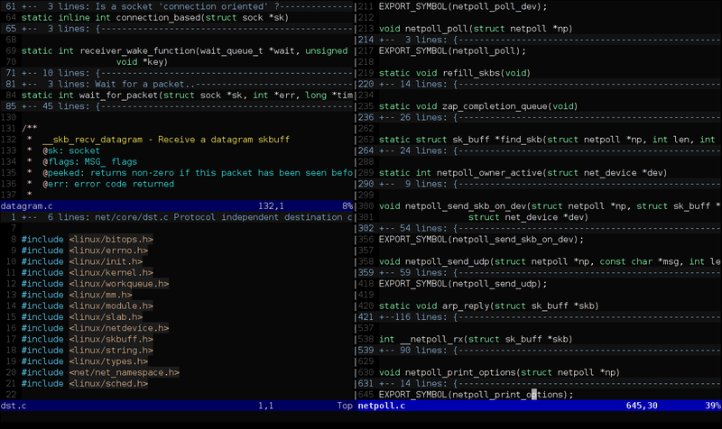

Cheat-Sheet de vim
Vim est un éditeur de texte, c’est-à-dire un logiciel permettant la manipulation de fichiers texte. Il est directement inspiré de vi (un éditeur très répandu sur les systèmes d’exploitation de type UNIX), dont il est le clone le plus populaire. Son nom signifie d’ailleurs Vi IMproved, que l’on peut traduire par « VI aMélioré ».

Mouvement du curseur
- h - déplacer le curseur vers la gauche
- j - déplacer le curseur vers le bas
- k - déplacer le curseur vers le haut
- l - déplacer le curseur vers la droite
- w - aller en avant au début d'un mot
- W - aller en avant au début d'un mot (les mots peuvent contenir de la ponctuation)
- e - aller en avant à la fin d'un mot
- E - aller en avant à la fin d'un mot (les mots peuvent contenir de la ponctuation)
- b - aller en arrière au début d'un mot
- B - aller en arrière au début d'un mot (wles mots peuvent contenir de la ponctuation)
- 0 - aller au début de la ligne
- ^ - aller au premier caractère non-espace de la ligne
- $ - aller à la fin de la ligne
Insérer/ajouter du texte
- i - insérer avant le curseur
- I - insérer au début de la ligne
- a - insérer (ajouter) après le curseur
- A - insérer (ajouter) à la fin de la ligne
- o - ajouter (ouvrir) une nouvelle ligne vers le bas
- O - ajouter (ouvrir) une nouvelle ligne vers le haut
- ea - insérer (ajouter) a la fin d'un mot
- Esc - quiter le mode insertion
Commandes du mode visuel
- > - décaler le texte vers la droite
- < - décaler le texte vers la gauche
- y< - copier le texte marqué
- d< - supprimer le texte marqué
- ~< - modifier la casse
Quitter
- :w - écrire (sauver) le fichier
- :w !sudo tee % - write out the current file using sudo
- :wq< or x or ZZ - écrire (sauver) et quitter
- :q - quitter (échoue s'il y a des modifications non sauvegardées)
- :q! or ZQ - quitter et abandonner les modifications non sauvegardées
Rechercher et remplacer
- /pattern - chercher le motif
- ?pattern - chercher en arrière le motif
- \vpattern - 'very magic' pattern: non-alphanumeric characters are interpreted as special regex symbols (no escaping needed)
- n< - répéter la recherche dans la même direction
- N - répéter la recherche dans la direction opposée
- :%s/old/new/g - remplacer toutes les occurrences de ol avec new dans tout le fichier
- :%s/old/new/gc - remplacer toutes les occurrences de ol avec new dans tout le fichier (demande confirmation)
- :noh - remove highlighting of search matches